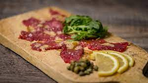

Mimosa

Description
Venison Carpaccio from Rick Matney - Meateater Crew
This carpaccio recipe will work with any type of venison, but he loves to use axis deer.
This is a standard carpaccio with a lemon vinaigrette and arugula, finished with
Maldon salt and capers, but the incorporation of venison yields a dish that's anything but
ordinary.
Ingredients
Backstraps
- 8 ounces untrimmed backstrap—dry aged in refrigeration for at least 5 days.
- 1/2 lemon, juiced
- 1/4 cup olive oil
Sauce
- 1 tbsp. white wine vinegar
- 1/2 shallot, rough chopped
- 1 garlic clove, minced finely or crushed with garlic press
- Pinch of salt and pepper
- Fresh ground pepper to taste
- 1 tbsp. capers
- 1/2 cup baby arugula
- Pinch of Maldon salt for finishing
Steps
Sauce
- In a small blender, add olive oil, juice from 1/2 lemon, white wine vinegar, shallot, garlic,
salt and pepper, and puree till smooth. Set aside.
(This will yield more than what you need for this recipe,
but can be used as a salad dressing.)
Backstraps
- After backstrap has aged for at least 5 days in refrigeration,
trim off all silver skin, fat and dried meat.
Slice the meat against the grain very thin.
(To slice against the grain, you will need to locate the direction of the muscle fibers.
Slice across the fibers and perpendicular to the fiber grains.
This will result in meat that is more tender.)
- Press the sliced meat against a cutting board with your fingers until each piece is
uniform in thickness.
You can also use the flat base of a bowl or cup if you don't want to touch it with
your hands.
- Plate the pressed backstrap in an even layer on a serving platter.
Add a pile of arugula, and scatter the capers over the meat.
Drizzle the plate of ingredients with olive oil vinaigrette.
Finish with a light sprinkle of fresh ground pepper and Maldon salt.
Serve chilled.